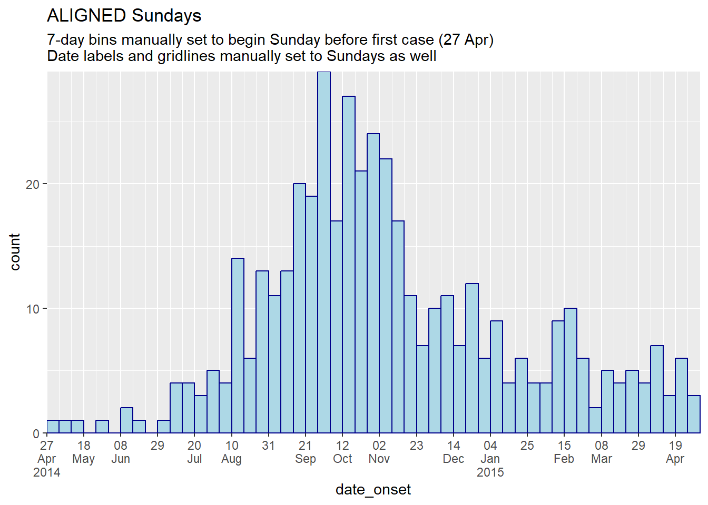
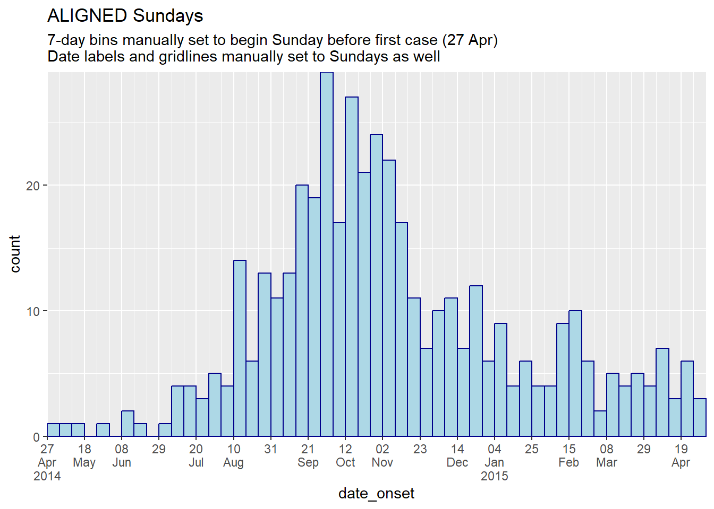

4 Epidemic curves

An epidemic curve (also known as an “epi curve”) is a core epidemiological chart typically used to visualize the temporal pattern of illness onset among a cluster or epidemic of cases.
Analysis of the epicurve can reveal temporal trends, outliers, the magnitude of the outbreak, the most likely time period of exposure, time intervals between case generations, and can even help identify the mode of transmission of an unidentified disease (e.g. point source, continuous common source, person-to-person propagation). One online lesson on interpretation of epi curves can be found at the website of the US CDC.
In this page we demonstrate making epidemic curves with the ggplot2 package, which allows for advanced customizability.
Also addressed are specific use-cases such as:
- Plotting aggregated count data
- Faceting or producing small-multiples
- Applying moving averages
- Showing which data are “tentative” or subject to reporting delays
- Overlaying cumulative case incidence using a second axis
The incidence2 package offers alternative approach with easier commands, but as of this writing was undergoing revisions and was not stable. It will be re-added to this chapter when stable.
4.1 Preparation
Packages
This code chunk shows the loading of packages required for the analyses. In this handbook we emphasize p_load() from pacman, which installs the package if necessary and loads it for use. You can also load installed packages with library() from base R. See the page on [R basics] for more information on R packages.
pacman::p_load(
rio, # file import/export
here, # relative filepaths
lubridate, # working with dates/epiweeks
aweek, # alternative package for working with dates/epiweeks
incidence2, # epicurves of linelist data
i2extras, # supplement to incidence2
stringr, # search and manipulate character strings
forcats, # working with factors
RColorBrewer, # Color palettes from colorbrewer2.org
tidyverse # data management + ggplot2 graphics
) Import data
Two example datasets are used in this section:
- Linelist of individual cases from a simulated epidemic
- Aggregated counts by hospital from the same simulated epidemic
The datasets are imported using the import() function from the rio package. See the page on [Import and export] for various ways to import data.
Case linelist
We import the dataset of cases from a simulated Ebola epidemic. If you want to download the data to follow step-by-step, see instruction in the [Download handbook and data] page. We assume the file is in the working directory so no sub-folders are specified in this file path.
linelist <- import("linelist_cleaned.xlsx")The first 50 rows are displayed below.
Case counts aggregated by hospital
For the purposes of the handbook, the dataset of weekly aggregated counts by hospital is created from the linelist with the following code.
# import the counts data into R
count_data <- linelist %>%
group_by(hospital, date_hospitalisation) %>%
summarize(n_cases = dplyr::n()) %>%
filter(date_hospitalisation > as.Date("2013-06-01")) %>%
ungroup()The first 50 rows are displayed below:
Set parameters
For production of a report, you may want to set editable parameters such as the date for which the data is current (the “data date”). You can then reference the object data_date in your code when applying filters or in dynamic captions.
## set the report date for the report
## note: can be set to Sys.Date() for the current date
data_date <- as.Date("2015-05-15")Verify dates
Verify that each relevant date column is class Date and has an appropriate range of values. You can do this simply using hist() for histograms, or range() with na.rm=TRUE, or with ggplot() as below.
# check range of onset dates
ggplot(data = linelist)+
geom_histogram(aes(x = date_onset))
4.2 Epicurves with ggplot2
Using ggplot() to build your epicurve allows for flexibility and customization, but requires more effort and understanding of how ggplot() works.
You must manually control the aggregation of the cases by time (into weeks, months, etc) and the intervals of the labels on the date axis. This must be carefully managed.
These examples use a subset of the linelist dataset - only the cases from Central Hospital.
To produce an epicurve with ggplot() there are three main elements:
- A histogram, with linelist cases aggregated into “bins” distinguished by specific “break” points
- Scales for the axes and their labels
- Themes for the plot appearance, including titles, labels, captions, etc.
Specify case bins
Here we show how to specify how cases will be aggregated into histogram bins (“bars”). It is important to recognize that the aggregation of cases into histogram bins is not necessarily the same intervals as the dates that will appear on the x-axis.
Below is perhaps the most simple code to produce daily and weekly epicurves.
In the over-arching ggplot() command the dataset is provided to data =. Onto this foundation, the geometry of a histogram is added with a +. Within the geom_histogram(), we map the aesthetics such that the column date_onset is mapped to the x-axis. Also within the geom_histogram() but not within aes() we set the binwidth = of the histogram bins, in days. If this ggplot2 syntax is confusing, review the page on ggplot basics.
CAUTION: Plotting weekly cases by using binwidth = 7 starts the first 7-day bin at the first case, which could be any day of the week! To create specific weeks, see section below .
# daily
ggplot(data = central_data) + # set data
geom_histogram( # add histogram
mapping = aes(x = date_onset), # map date column to x-axis
binwidth = 1)+ # cases binned by 1 day
labs(title = "Central Hospital - Daily") # title
# weekly
ggplot(data = central_data) + # set data
geom_histogram( # add histogram
mapping = aes(x = date_onset), # map date column to x-axis
binwidth = 7)+ # cases binned every 7 days, starting from first case (!)
labs(title = "Central Hospital - 7-day bins, starting at first case") # title

Let us note that the first case in this Central Hospital dataset had symptom onset on:
## [1] "Thursday 01 May, 2014"To manually specify the histogram bin breaks, do not use the binwidth = argument, and instead supply a vector of dates to breaks =.
Create the vector of dates with the base R function seq.Date(). This function expects arguments to =, from =, and by =. For example, the command below returns monthly dates starting at Jan 15 and ending by June 28.
monthly_breaks <- seq.Date(from = as.Date("2014-02-01"),
to = as.Date("2015-07-15"),
by = "months")
monthly_breaks # print## [1] "2014-02-01" "2014-03-01" "2014-04-01" "2014-05-01" "2014-06-01" "2014-07-01" "2014-08-01" "2014-09-01"
## [9] "2014-10-01" "2014-11-01" "2014-12-01" "2015-01-01" "2015-02-01" "2015-03-01" "2015-04-01" "2015-05-01"
## [17] "2015-06-01" "2015-07-01"This vector can be provided to geom_histogram() as breaks =:
# monthly
ggplot(data = central_data) +
geom_histogram(
mapping = aes(x = date_onset),
breaks = monthly_breaks)+ # provide the pre-defined vector of breaks
labs(title = "Monthly case bins") # title
A simple weekly date sequence can be returned by setting by = "week". For example:
An alternative to supplying specific start and end dates is to write dynamic code so that weekly bins begin the Monday before the first case. We will use these date vectors throughout the examples below.
# Sequence of weekly Monday dates for CENTRAL HOSPITAL
weekly_breaks_central <- seq.Date(
from = floor_date(min(central_data$date_onset, na.rm=T), "week", week_start = 1), # monday before first case
to = ceiling_date(max(central_data$date_onset, na.rm=T), "week", week_start = 1), # monday after last case
by = "week")Let’s unpack the rather daunting code above:
- The “from” value (earliest date of the sequence) is created as follows: the minimum date value (
min()withna.rm=TRUE) in the columndate_onsetis fed tofloor_date()from the lubridate package.floor_date()set to “week” returns the start date of that cases’s “week”, given that the start day of each week is a Monday (week_start = 1).
- Likewise, the “to” value (end date of the sequence) is created using the inverse function
ceiling_date()to return the Monday after the last case.
- The “by” argument of
seq.Date()can be set to any number of days, weeks, or months.
- Use
week_start = 7for Sunday weeks
As we will use these date vectors throughout this page, we also define one for the whole outbreak (the above is for Central Hospital only).
# Sequence for the entire outbreak
weekly_breaks_all <- seq.Date(
from = floor_date(min(linelist$date_onset, na.rm=T), "week", week_start = 1), # monday before first case
to = ceiling_date(max(linelist$date_onset, na.rm=T), "week", week_start = 1), # monday after last case
by = "week")These seq.Date() outputs can be used to create histogram bin breaks, but also the breaks for the date labels, which may be independent from the bins. Read more about the date labels in later sections.
TIP: For a more simple ggplot() command, save the bin breaks and date label breaks as named vectors in advance, and simply provide their names to breaks =.
Weekly epicurve example
Below is detailed example code to produce weekly epicurves for Monday weeks, with aligned bars, date labels, and vertical gridlines. This section is for the user who needs code quickly. To understand each aspect (themes, date labels, etc.) in-depth, continue to the subsequent sections. Of note:
- The histogram bin breaks are defined with
seq.Date()as explained above to begin the Monday before the earliest case and to end the Monday after the last case
- The interval of date labels is specified by
date_breaks =withinscale_x_date()
- The interval of minor vertical gridlines between date labels is specified to
date_minor_breaks =
- We use
closed = "left"in thegeom_histogram()to ensure the date are counted in the correct bins
-
expand = c(0,0)in the x and y scales removes excess space on each side of the axes, which also ensures the date labels begin from the first bar.
# TOTAL MONDAY WEEK ALIGNMENT
#############################
# Define sequence of weekly breaks
weekly_breaks_central <- seq.Date(
from = floor_date(min(central_data$date_onset, na.rm=T), "week", week_start = 1), # Monday before first case
to = ceiling_date(max(central_data$date_onset, na.rm=T), "week", week_start = 1), # Monday after last case
by = "week") # bins are 7-days
ggplot(data = central_data) +
# make histogram: specify bin break points: starts the Monday before first case, end Monday after last case
geom_histogram(
# mapping aesthetics
mapping = aes(x = date_onset), # date column mapped to x-axis
# histogram bin breaks
breaks = weekly_breaks_central, # histogram bin breaks defined previously
closed = "left", # count cases from start of breakpoint
# bars
color = "darkblue", # color of lines around bars
fill = "lightblue" # color of fill within bars
)+
# x-axis labels
scale_x_date(
expand = c(0,0), # remove excess x-axis space before and after case bars
date_breaks = "4 weeks", # date labels and major vertical gridlines appear every 3 Monday weeks
date_minor_breaks = "week", # minor vertical lines appear every Monday week
date_labels = "%a\n%d %b\n%Y")+ # date labels format
# y-axis
scale_y_continuous(
expand = c(0,0))+ # remove excess y-axis space below 0 (align histogram flush with x-axis)
# aesthetic themes
theme_minimal()+ # simplify plot background
theme(
plot.caption = element_text(hjust = 0, # caption on left side
face = "italic"), # caption in italics
axis.title = element_text(face = "bold"))+ # axis titles in bold
# labels including dynamic caption
labs(
title = "Weekly incidence of cases (Monday weeks)",
subtitle = "Note alignment of bars, vertical gridlines, and axis labels on Monday weeks",
x = "Week of symptom onset",
y = "Weekly incident cases reported",
caption = stringr::str_glue("n = {nrow(central_data)} from Central Hospital; Case onsets range from {format(min(central_data$date_onset, na.rm=T), format = '%a %d %b %Y')} to {format(max(central_data$date_onset, na.rm=T), format = '%a %d %b %Y')}\n{nrow(central_data %>% filter(is.na(date_onset)))} cases missing date of onset and not shown"))
Sunday weeks
To achieve the above plot for Sunday weeks a few modifications are needed, because the date_breaks = "weeks" only work for Monday weeks.
- The break points of the histogram bins must be set to Sundays (
week_start = 7)
- Within
scale_x_date(), the similar date breaks should be provided tobreaks =andminor_breaks =to ensure the date labels and vertical gridlines align on Sundays.
For example, the scale_x_date() command for Sunday weeks could look like this:
scale_x_date(
expand = c(0,0),
# specify interval of date labels and major vertical gridlines
breaks = seq.Date(
from = floor_date(min(central_data$date_onset, na.rm=T), "week", week_start = 7), # Sunday before first case
to = ceiling_date(max(central_data$date_onset, na.rm=T), "week", week_start = 7), # Sunday after last case
by = "4 weeks"),
# specify interval of minor vertical gridline
minor_breaks = seq.Date(
from = floor_date(min(central_data$date_onset, na.rm=T), "week", week_start = 7), # Sunday before first case
to = ceiling_date(max(central_data$date_onset, na.rm=T), "week", week_start = 7), # Sunday after last case
by = "week"),
# date label format
#date_labels = "%a\n%d %b\n%Y")+ # day, above month abbrev., above 2-digit year
label = scales::label_date_short())+ # automatic label formattingGroup/color by value
The histogram bars can be colored by group and “stacked”. To designate the grouping column, make the following changes. See the ggplot basics page for details.
- Within the histogram aesthetic mapping
aes(), map the column name to thegroup =andfill =arguments
- Remove any
fill =argument outside ofaes(), as it will override the one inside
- Arguments inside
aes()will apply by group, whereas any outside will apply to all bars (e.g. you may still wantcolor =outside, so each bar has the same border)
Here is what the aes() command would look like to group and color the bars by gender:
aes(x = date_onset, group = gender, fill = gender)Here it is applied:
ggplot(data = linelist) + # begin with linelist (many hospitals)
# make histogram: specify bin break points: starts the Monday before first case, end Monday after last case
geom_histogram(
mapping = aes(
x = date_onset,
group = hospital, # set data to be grouped by hospital
fill = hospital), # bar fill (inside color) by hospital
# bin breaks are Monday weeks
breaks = weekly_breaks_all, # sequence of weekly Monday bin breaks for whole outbreak, defined in previous code
closed = "left", # count cases from start of breakpoint
# Color around bars
color = "black")
Adjust colors
- To manually set the fill for each group, use
scale_fill_manual()(note:scale_color_manual()is different!).- Use the
values =argument to apply a vector of colors.
- Use
na.value =to specify a color forNAvalues.
- Use the
labels =argument to change the text of legend items. To be safe, provide as a named vector likec("old" = "new", "old" = "new")or adjust the values in the data itself.
- Use
name =to give a proper title to the legend
- Use the
- For more tips on color scales and palettes, see the page on ggplot basics.
ggplot(data = linelist)+ # begin with linelist (many hospitals)
# make histogram
geom_histogram(
mapping = aes(x = date_onset,
group = hospital, # cases grouped by hospital
fill = hospital), # bar fill by hospital
# bin breaks
breaks = weekly_breaks_all, # sequence of weekly Monday bin breaks, defined in previous code
closed = "left", # count cases from start of breakpoint
# Color around bars
color = "black")+ # border color of each bar
# manual specification of colors
scale_fill_manual(
values = c("black", "orange", "grey", "beige", "blue", "brown"),
labels = c("St. Mark's Maternity Hospital (SMMH)" = "St. Mark's"),
name = "Hospital") # specify fill colors ("values") - attention to order!
Adjust level order
The order in which grouped bars are stacked is best adjusted by classifying the grouping column as class Factor. You can then designate the factor level order (and their display labels). See the page on [Factors] or ggplot tips for details.
Before making the plot, use the fct_relevel() function from forcats package to convert the grouping column to class factor and manually adjust the level order, as detailed in the page on [Factors].
# load forcats package for working with factors
pacman::p_load(forcats)
# Define new dataset with hospital as factor
plot_data <- linelist %>%
mutate(hospital = fct_relevel(hospital, c("Missing", "Other"))) # Convert to factor and set "Missing" and "Other" as top levels to appear on epicurve top
levels(plot_data$hospital) # print levels in order## [1] "Missing" "Other"
## [3] "Central Hospital" "Military Hospital"
## [5] "Port Hospital" "St. Mark's Maternity Hospital (SMMH)"In the below plot, the only differences from previous is that column hospital has been consolidated as above, and we use guides() to reverse the legend order, so that “Missing” is on the bottom of the legend.
ggplot(plot_data) + # Use NEW dataset with hospital as re-ordered factor
# make histogram
geom_histogram(
mapping = aes(x = date_onset,
group = hospital, # cases grouped by hospital
fill = hospital), # bar fill (color) by hospital
breaks = weekly_breaks_all, # sequence of weekly Monday bin breaks for whole outbreak, defined at top of ggplot section
closed = "left", # count cases from start of breakpoint
color = "black")+ # border color around each bar
# x-axis labels
scale_x_date(
expand = c(0,0), # remove excess x-axis space before and after case bars
date_breaks = "3 weeks", # labels appear every 3 Monday weeks
date_minor_breaks = "week", # vertical lines appear every Monday week
label = scales::label_date_short()) + # efficient label formatting
# y-axis
scale_y_continuous(
expand = c(0,0))+ # remove excess y-axis space below 0
# manual specification of colors, ! attention to order
scale_fill_manual(
values = c("grey", "beige", "black", "orange", "blue", "brown"),
labels = c("St. Mark's Maternity Hospital (SMMH)" = "St. Mark's"),
name = "Hospital")+
# aesthetic themes
theme_minimal()+ # simplify plot background
theme(
plot.caption = element_text(face = "italic", # caption on left side in italics
hjust = 0),
axis.title = element_text(face = "bold"))+ # axis titles in bold
# labels
labs(
title = "Weekly incidence of cases by hospital",
subtitle = "Hospital as re-ordered factor",
x = "Week of symptom onset",
y = "Weekly cases")TIP: To reverse the order of the legend only, add this ggplot2 command: guides(fill = guide_legend(reverse = TRUE)).
Adjust legend
Read more about legends and scales in the ggplot tips page. Here are a few highlights:
- Edit legend title either in the scale function or with
labs(fill = "Legend title")(if your are usingcolor =aesthetic, then uselabs(color = ""))
-
theme(legend.title = element_blank())to have no legend title
-
theme(legend.position = "top")(“bottom”, “left”, “right”, or “none” to remove the legend) -
theme(legend.direction = "horizontal")horizontal legend -
guides(fill = guide_legend(reverse = TRUE))to reverse order of the legend
Bars side-by-side
Side-by-side display of group bars (as opposed to stacked) is specified within geom_histogram() with position = "dodge" placed outside of aes().
If there are more than two value groups, these can become difficult to read. Consider instead using a faceted plot (small multiples). To improve readability in this example, missing gender values are removed.
ggplot(central_data %>% drop_na(gender))+ # begin with Central Hospital cases dropping missing gender
geom_histogram(
mapping = aes(
x = date_onset,
group = gender, # cases grouped by gender
fill = gender), # bars filled by gender
# histogram bin breaks
breaks = weekly_breaks_central, # sequence of weekly dates for Central outbreak - defined at top of ggplot section
closed = "left", # count cases from start of breakpoint
color = "black", # bar edge color
position = "dodge")+ # SIDE-BY-SIDE bars
# The labels on the x-axis
scale_x_date(expand = c(0,0), # remove excess x-axis space below and after case bars
date_breaks = "3 weeks", # labels appear every 3 Monday weeks
date_minor_breaks = "week", # vertical lines appear every Monday week
label = scales::label_date_short())+ # efficient date labels
# y-axis
scale_y_continuous(expand = c(0,0))+ # removes excess y-axis space between bottom of bars and the labels
#scale of colors and legend labels
scale_fill_manual(values = c("brown", "orange"), # specify fill colors ("values") - attention to order!
na.value = "grey" )+
# aesthetic themes
theme_minimal()+ # a set of themes to simplify plot
theme(plot.caption = element_text(face = "italic", hjust = 0), # caption on left side in italics
axis.title = element_text(face = "bold"))+ # axis titles in bold
# labels
labs(title = "Weekly incidence of cases, by gender",
subtitle = "Subtitle",
fill = "Gender", # provide new title for legend
x = "Week of symptom onset",
y = "Weekly incident cases reported")
Axis limits
There are two ways to limit the extent of axis values.
Generally the preferred way is to use the command coord_cartesian(), which accepts xlim = c(min, max) and ylim = c(min, max) (where you provide the min and max values). This acts as a “zoom” without actually removing any data, which is important for statistics and summary measures.
Alternatively, you can set maximum and minimum date values using limits = c() within scale_x_date(). For example:
scale_x_date(limits = c(as.Date("2014-04-01"), NA)) # sets a minimum date but leaves the maximum open. Likewise, if you want to the x-axis to extend to a specific date (e.g. current date), even if no new cases have been reported, you can use:
DANGER: Be cautious setting the y-axis scale breaks or limits (e.g. 0 to 30 by 5: seq(0, 30, 5)). Such static numbers can cut-off your plot too short if the data changes to exceed the limit!.
Date-axis labels/gridlines
TIP: Remember that date-axis labels are independent from the aggregation of the data into bars, but visually it can be important to align bins, date labels, and vertical grid lines.
To modify the date labels and grid lines, use scale_x_date() in one of these ways:
-
If your histogram bins are days, Monday weeks, months, or years:
- Use
date_breaks =to specify the interval of labels and major gridlines (e.g. “day”, “week”, “3 weeks”, “month”, or “year”) - Use
date_minor_breaks =to specify interval of minor vertical gridlines (between date labels)
- Add
expand = c(0,0)to begin the labels at the first bar
- Use
date_labels =to specify format of date labels - see the Dates page for tips (use\nfor a new line)
- Use
-
If your histogram bins are Sunday weeks:
- Use
breaks =andminor_breaks =by providing a sequence of date breaks for each - You can still use
date_labels =andexpand =for formatting as described above
- Use
Some notes:
- See the opening ggplot section for instructions on how to create a sequence of dates using
seq.Date().
- See this page or the [Working with dates] page for tips on creating date labels.
Demonstrations
Below is a demonstration of plots where the bins and the plot labels/grid lines are aligned and not aligned:
# 7-day bins + Monday labels
#############################
ggplot(central_data) +
geom_histogram(
mapping = aes(x = date_onset),
binwidth = 7, # 7-day bins with start at first case
color = "darkblue",
fill = "lightblue") +
scale_x_date(
expand = c(0,0), # remove excess x-axis space below and after case bars
date_breaks = "3 weeks", # Monday every 3 weeks
date_minor_breaks = "week", # Monday weeks
label = scales::label_date_short())+ # automatic label formatting
scale_y_continuous(
expand = c(0,0))+ # remove excess space under x-axis, make flush
labs(
title = "MISALIGNED",
subtitle = "! CAUTION: 7-day bars start Thursdays at first case\nDate labels and gridlines on Mondays\nNote how ticks don't align with bars")
# 7-day bins + Months
#####################
ggplot(central_data) +
geom_histogram(
mapping = aes(x = date_onset),
binwidth = 7,
color = "darkblue",
fill = "lightblue") +
scale_x_date(
expand = c(0,0), # remove excess x-axis space below and after case bars
date_breaks = "months", # 1st of month
date_minor_breaks = "week", # Monday weeks
label = scales::label_date_short())+ # automatic label formatting
scale_y_continuous(
expand = c(0,0))+ # remove excess space under x-axis, make flush
labs(
title = "MISALIGNED",
subtitle = "! CAUTION: 7-day bars start Thursdays with first case\nMajor gridlines and date labels at 1st of each month\nMinor gridlines weekly on Mondays\nNote uneven spacing of some gridlines and ticks unaligned with bars")
# TOTAL MONDAY ALIGNMENT: specify manual bin breaks to be mondays
#################################################################
ggplot(central_data) +
geom_histogram(
mapping = aes(x = date_onset),
# histogram breaks set to 7 days beginning Monday before first case
breaks = weekly_breaks_central, # defined earlier in this page
closed = "left", # count cases from start of breakpoint
color = "darkblue",
fill = "lightblue") +
scale_x_date(
expand = c(0,0), # remove excess x-axis space below and after case bars
date_breaks = "4 weeks", # Monday every 4 weeks
date_minor_breaks = "week", # Monday weeks
label = scales::label_date_short())+ # label formatting
scale_y_continuous(
expand = c(0,0))+ # remove excess space under x-axis, make flush
labs(
title = "ALIGNED Mondays",
subtitle = "7-day bins manually set to begin Monday before first case (28 Apr)\nDate labels and gridlines on Mondays as well")
# TOTAL MONDAY ALIGNMENT WITH MONTHS LABELS:
############################################
ggplot(central_data) +
geom_histogram(
mapping = aes(x = date_onset),
# histogram breaks set to 7 days beginning Monday before first case
breaks = weekly_breaks_central, # defined earlier in this page
closed = "left", # count cases from start of breakpoint
color = "darkblue",
fill = "lightblue") +
scale_x_date(
expand = c(0,0), # remove excess x-axis space below and after case bars
date_breaks = "months", # Monday every 4 weeks
date_minor_breaks = "week", # Monday weeks
label = scales::label_date_short())+ # label formatting
scale_y_continuous(
expand = c(0,0))+ # remove excess space under x-axis, make flush
theme(panel.grid.major = element_blank())+ # Remove major gridlines (fall on 1st of month)
labs(
title = "ALIGNED Mondays with MONTHLY labels",
subtitle = "7-day bins manually set to begin Monday before first case (28 Apr)\nDate labels on 1st of Month\nMonthly major gridlines removed")
# TOTAL SUNDAY ALIGNMENT: specify manual bin breaks AND labels to be Sundays
############################################################################
ggplot(central_data) +
geom_histogram(
mapping = aes(x = date_onset),
# histogram breaks set to 7 days beginning Sunday before first case
breaks = seq.Date(from = floor_date(min(central_data$date_onset, na.rm=T), "week", week_start = 7),
to = ceiling_date(max(central_data$date_onset, na.rm=T), "week", week_start = 7),
by = "7 days"),
closed = "left", # count cases from start of breakpoint
color = "darkblue",
fill = "lightblue") +
scale_x_date(
expand = c(0,0),
# date label breaks and major gridlines set to every 3 weeks beginning Sunday before first case
breaks = seq.Date(from = floor_date(min(central_data$date_onset, na.rm=T), "week", week_start = 7),
to = ceiling_date(max(central_data$date_onset, na.rm=T), "week", week_start = 7),
by = "3 weeks"),
# minor gridlines set to weekly beginning Sunday before first case
minor_breaks = seq.Date(from = floor_date(min(central_data$date_onset, na.rm=T), "week", week_start = 7),
to = ceiling_date(max(central_data$date_onset, na.rm=T), "week", week_start = 7),
by = "7 days"),
label = scales::label_date_short())+ # label formatting
scale_y_continuous(
expand = c(0,0))+ # remove excess space under x-axis, make flush
labs(title = "ALIGNED Sundays",
subtitle = "7-day bins manually set to begin Sunday before first case (27 Apr)\nDate labels and gridlines manually set to Sundays as well")

 

Aggregated data
Often instead of a linelist, you begin with aggregated counts from facilities, districts, etc. You can make an epicurve with ggplot() but the code will be slightly different. This section will utilize the count_data dataset that was imported earlier, in the data preparation section. This dataset is the linelist aggregated to day-hospital counts. The first 50 rows are displayed below.
Plotting daily counts
We can plot a daily epicurve from these daily counts. Here are the differences to the code:
- Within the aesthetic mapping
aes(), specifyy =as the counts column (in this case, the column name isn_cases) - Add the argument
stat = "identity"withingeom_histogram(), which specifies that bar height should be they =value, not the number of rows as is the default
- Add the argument
width =to avoid vertical white lines between the bars. For daily data set to 1. For weekly count data set to 7. For monthly count data, white lines are an issue (each month has different number of days) - consider transforming your x-axis to a categorical ordered factor (months) and usinggeom_col().
ggplot(data = count_data)+
geom_histogram(
mapping = aes(x = date_hospitalisation, y = n_cases),
stat = "identity",
width = 1)+ # for daily counts, set width = 1 to avoid white space between bars
labs(
x = "Date of report",
y = "Number of cases",
title = "Daily case incidence, from daily count data")Plotting weekly counts
If your data are already case counts by week, they might look like this dataset (called count_data_weekly):
The first 50 rows of count_data_weekly are displayed below. You can see that the counts have been aggregated into weeks. Each week is displayed by the first day of the week (Monday by default).
Now plot so that x = the epiweek column. Remember to add y = the counts column to the aesthetic mapping, and add stat = "identity" as explained above.
ggplot(data = count_data_weekly)+
geom_histogram(
mapping = aes(
x = epiweek, # x-axis is epiweek (as class Date)
y = n_cases_weekly, # y-axis height in the weekly case counts
group = hospital, # we are grouping the bars and coloring by hospital
fill = hospital),
stat = "identity")+ # this is also required when plotting count data
# labels for x-axis
scale_x_date(
date_breaks = "2 months", # labels every 2 months
date_minor_breaks = "1 month", # gridlines every month
label = scales::label_date_short())+ # label formatting
# Choose color palette (uses RColorBrewer package)
scale_fill_brewer(palette = "Pastel2")+
theme_minimal()+
labs(
x = "Week of onset",
y = "Weekly case incidence",
fill = "Hospital",
title = "Weekly case incidence, from aggregated count data by hospital")
Moving averages
See the page on Moving averages for a detailed description and several options. Below is one option for calculating moving averages with the package slider. In this approach, the moving average is calculated in the dataset prior to plotting:
- Aggregate the data into counts as necessary (daily, weekly, etc.) (see [Grouping data] page)
- Create a new column to hold the moving average, created with
slide_index()from slider package
- Plot the moving average as a
geom_line()on top of (after) the epicurve histogram
See the helpful online vignette for the slider package
# load package
pacman::p_load(slider) # slider used to calculate rolling averages
# make dataset of daily counts and 7-day moving average
#######################################################
ll_counts_7day <- linelist %>% # begin with linelist
## count cases by date
count(date_onset, name = "new_cases") %>% # name new column with counts as "new_cases"
drop_na(date_onset) %>% # remove cases with missing date_onset
## calculate the average number of cases in 7-day window
mutate(
avg_7day = slider::slide_index( # create new column
new_cases, # calculate based on value in new_cases column
.i = date_onset, # index is date_onset col, so non-present dates are included in window
.f = ~mean(.x, na.rm = TRUE), # function is mean() with missing values removed
.before = 6, # window is the day and 6-days before
.complete = FALSE), # must be FALSE for unlist() to work in next step
avg_7day = unlist(avg_7day)) # convert class list to class numeric
# plot
######
ggplot(data = ll_counts_7day) + # begin with new dataset defined above
geom_histogram( # create epicurve histogram
mapping = aes(
x = date_onset, # date column as x-axis
y = new_cases), # height is number of daily new cases
stat = "identity", # height is y value
fill="#92a8d1", # cool color for bars
colour = "#92a8d1", # same color for bar border
)+
geom_line( # make line for rolling average
mapping = aes(
x = date_onset, # date column for x-axis
y = avg_7day, # y-value set to rolling average column
lty = "7-day \nrolling avg"), # name of line in legend
color="red", # color of line
size = 1) + # width of line
scale_x_date( # date scale
date_breaks = "1 month",
label = scales::label_date_short(), # label formatting
expand = c(0,0)) +
scale_y_continuous( # y-axis scale
expand = c(0,0),
limits = c(0, NA)) +
labs(
x="",
y ="Number of confirmed cases",
fill = "Legend")+
theme_minimal()+
theme(legend.title = element_blank()) # removes title of legendFaceting/small-multiples
As with other ggplots, you can create facetted plots (“small multiples”). As explained in the ggplot tips page of this handbook, you can use either facet_wrap() or facet_grid(). Here we demonstrate with facet_wrap(). For epicurves, facet_wrap() is typically easier as it is likely that you only need to facet on one column.
The general syntax is facet_wrap(rows ~ cols), where to the left of the tilde (~) is the name of a column to be spread across the “rows” of the facetted plot, and to the right of the tilde is the name of a column to be spread across the “columns” of the facetted plot. Most simply, just use one column name, to the right of the tilde: facet_wrap(~age_cat).
Free axes
You will need to decide whether the scales of the axes for each facet are “fixed” to the same dimensions (default), or “free” (meaning they will change based on the data within the facet). Do this with the scales = argument within facet_wrap() by specifying “free_x” or “free_y”, or “free”.
Number of cols and rows of facets
This can be specified with ncol = and nrow = within facet_wrap().
Order of panels
To change the order of appearance, change the underlying order of the levels of the factor column used to create the facets.
Aesthetics
Font size and face, strip color, etc. can be modified through theme() with arguments like:
-
strip.text = element_text()(size, colour, face, angle…) -
strip.background = element_rect()(e.g. element_rect(fill=“grey”))
-
strip.position =(position of the strip “bottom”, “top”, “left”, or “right”)
Strip labels
Labels of the facet plots can be modified through the “labels” of the column as a factor, or by the use of a “labeller”.
Make a labeller like this, using the function as_labeller() from ggplot2. Then provide the labeller to the labeller = argument of facet_wrap() as shown below.
my_labels <- as_labeller(c(
"0-4" = "Ages 0-4",
"5-9" = "Ages 5-9",
"10-14" = "Ages 10-14",
"15-19" = "Ages 15-19",
"20-29" = "Ages 20-29",
"30-49" = "Ages 30-49",
"50-69" = "Ages 50-69",
"70+" = "Over age 70"))An example facetted plot - facetted by column age_cat.
# make plot
###########
ggplot(central_data) +
geom_histogram(
mapping = aes(
x = date_onset,
group = age_cat,
fill = age_cat), # arguments inside aes() apply by group
color = "black", # arguments outside aes() apply to all data
# histogram breaks
breaks = weekly_breaks_central, # pre-defined date vector (see earlier in this page)
closed = "left" # count cases from start of breakpoint
)+
# The labels on the x-axis
scale_x_date(
expand = c(0,0), # remove excess x-axis space below and after case bars
date_breaks = "2 months", # labels appear every 2 months
date_minor_breaks = "1 month", # vertical lines appear every 1 month
label = scales::label_date_short())+ # label formatting
# y-axis
scale_y_continuous(expand = c(0,0))+ # removes excess y-axis space between bottom of bars and the labels
# aesthetic themes
theme_minimal()+ # a set of themes to simplify plot
theme(
plot.caption = element_text(face = "italic", hjust = 0), # caption on left side in italics
axis.title = element_text(face = "bold"),
legend.position = "bottom",
strip.text = element_text(face = "bold", size = 10),
strip.background = element_rect(fill = "grey"))+ # axis titles in bold
# create facets
facet_wrap(
~age_cat,
ncol = 4,
strip.position = "top",
labeller = my_labels)+
# labels
labs(
title = "Weekly incidence of cases, by age category",
subtitle = "Subtitle",
fill = "Age category", # provide new title for legend
x = "Week of symptom onset",
y = "Weekly incident cases reported",
caption = stringr::str_glue("n = {nrow(central_data)} from Central Hospital; Case onsets range from {format(min(central_data$date_onset, na.rm=T), format = '%a %d %b %Y')} to {format(max(central_data$date_onset, na.rm=T), format = '%a %d %b %Y')}\n{nrow(central_data %>% filter(is.na(date_onset)))} cases missing date of onset and not shown"))
See this link for more information on labellers.
Total epidemic in facet background
To show the total epidemic in the background of each facet, add the function gghighlight() with empty parentheses to the ggplot. This is from the package gghighlight. Note that the y-axis maximum in all facets is now based on the peak of the entire epidemic. There are more examples of this package in the ggplot tips page.
ggplot(central_data) +
# epicurves by group
geom_histogram(
mapping = aes(
x = date_onset,
group = age_cat,
fill = age_cat), # arguments inside aes() apply by group
color = "black", # arguments outside aes() apply to all data
# histogram breaks
breaks = weekly_breaks_central, # pre-defined date vector (see earlier in this page)
closed = "left", # count cases from start of breakpoint
)+ # pre-defined date vector (see top of ggplot section)
# add grey epidemic in background to each facet
gghighlight::gghighlight()+
# labels on x-axis
scale_x_date(
expand = c(0,0), # remove excess x-axis space below and after case bars
date_breaks = "2 months", # labels appear every 2 months
date_minor_breaks = "1 month", # vertical lines appear every 1 month
label = scales::label_date_short())+ # label formatting
# y-axis
scale_y_continuous(expand = c(0,0))+ # removes excess y-axis space below 0
# aesthetic themes
theme_minimal()+ # a set of themes to simplify plot
theme(
plot.caption = element_text(face = "italic", hjust = 0), # caption on left side in italics
axis.title = element_text(face = "bold"),
legend.position = "bottom",
strip.text = element_text(face = "bold", size = 10),
strip.background = element_rect(fill = "white"))+ # axis titles in bold
# create facets
facet_wrap(
~age_cat, # each plot is one value of age_cat
ncol = 4, # number of columns
strip.position = "top", # position of the facet title/strip
labeller = my_labels)+ # labeller defines above
# labels
labs(
title = "Weekly incidence of cases, by age category",
subtitle = "Subtitle",
fill = "Age category", # provide new title for legend
x = "Week of symptom onset",
y = "Weekly incident cases reported",
caption = stringr::str_glue("n = {nrow(central_data)} from Central Hospital; Case onsets range from {format(min(central_data$date_onset, na.rm=T), format = '%a %d %b %Y')} to {format(max(central_data$date_onset, na.rm=T), format = '%a %d %b %Y')}\n{nrow(central_data %>% filter(is.na(date_onset)))} cases missing date of onset and not shown"))One facet with data
If you want to have one facet box that contains all the data, duplicate the entire dataset and treat the duplicates as one faceting value. A “helper” function CreateAllFacet() below can assist with this (thanks to this blog post). When it is run, the number of rows doubles and there will be a new column called facet in which the duplicated rows will have the value “all”, and the original rows have the their original value of the faceting colum. Now you just have to facet on the facet column.
Here is the helper function. Run it so that it is available to you.
# Define helper function
CreateAllFacet <- function(df, col){
df$facet <- df[[col]]
temp <- df
temp$facet <- "all"
merged <-rbind(temp, df)
# ensure the facet value is a factor
merged[[col]] <- as.factor(merged[[col]])
return(merged)
}Now apply the helper function to the dataset, on column age_cat:
# Create dataset that is duplicated and with new column "facet" to show "all" age categories as another facet level
central_data2 <- CreateAllFacet(central_data, col = "age_cat") %>%
# set factor levels
mutate(facet = fct_relevel(facet, "all", "0-4", "5-9",
"10-14", "15-19", "20-29",
"30-49", "50-69", "70+"))## Warning: There was 1 warning in `mutate()`.
## ℹ In argument: `facet = fct_relevel(...)`.
## Caused by warning:
## ! 1 unknown level in `f`: 70+
# check levels
table(central_data2$facet, useNA = "always")##
## all 0-4 5-9 10-14 15-19 20-29 30-49 50-69 <NA>
## 454 84 84 82 58 73 57 7 9Notable changes to the ggplot() command are:
- The data used is now central_data2 (double the rows, with new column “facet”)
- Labeller will need to be updated, if used
- Optional: to achieve vertically stacked facets: the facet column is moved to rows side of equation and on right is replaced by “.” (
facet_wrap(facet~.)), andncol = 1. You may also need to adjust the width and height of the saved png plot image (seeggsave()in ggplot tips).
ggplot(central_data2) +
# actual epicurves by group
geom_histogram(
mapping = aes(
x = date_onset,
group = age_cat,
fill = age_cat), # arguments inside aes() apply by group
color = "black", # arguments outside aes() apply to all data
# histogram breaks
breaks = weekly_breaks_central, # pre-defined date vector (see earlier in this page)
closed = "left", # count cases from start of breakpoint
)+ # pre-defined date vector (see top of ggplot section)
# Labels on x-axis
scale_x_date(
expand = c(0,0), # remove excess x-axis space below and after case bars
date_breaks = "2 months", # labels appear every 2 months
date_minor_breaks = "1 month", # vertical lines appear every 1 month
label = scales::label_date_short())+ # automatic label formatting
# y-axis
scale_y_continuous(expand = c(0,0))+ # removes excess y-axis space between bottom of bars and the labels
# aesthetic themes
theme_minimal()+ # a set of themes to simplify plot
theme(
plot.caption = element_text(face = "italic", hjust = 0), # caption on left side in italics
axis.title = element_text(face = "bold"),
legend.position = "bottom")+
# create facets
facet_wrap(facet~. , # each plot is one value of facet
ncol = 1)+
# labels
labs(title = "Weekly incidence of cases, by age category",
subtitle = "Subtitle",
fill = "Age category", # provide new title for legend
x = "Week of symptom onset",
y = "Weekly incident cases reported",
caption = stringr::str_glue("n = {nrow(central_data)} from Central Hospital; Case onsets range from {format(min(central_data$date_onset, na.rm=T), format = '%a %d %b %Y')} to {format(max(central_data$date_onset, na.rm=T), format = '%a %d %b %Y')}\n{nrow(central_data %>% filter(is.na(date_onset)))} cases missing date of onset and not shown"))4.3 Tentative data
The most recent data shown in epicurves should often be marked as tentative, or subject to reporting delays. This can be done in by adding a vertical line and/or rectangle over a specified number of days. Here are two options:
- Use
annotate():- For a line use
annotate(geom = "segment"). Providex,xend,y, andyend. Adjust size, linetype (lty), and color.
- For a rectangle use
annotate(geom = "rect"). Provide xmin/xmax/ymin/ymax. Adjust color and alpha.
- For a line use
- Group the data by tentative status and color those bars differently
CAUTION: You might try geom_rect() to draw a rectangle, but adjusting the transparency does not work in a linelist context. This function overlays one rectangle for each observation/row!. Use either a very low alpha (e.g. 0.01), or another approach.
Using annotate()
- Within
annotate(geom = "rect"), thexminandxmaxarguments must be given inputs of class Date.
- Note that because these data are aggregated into weekly bars, and the last bar extends to the Monday after the last data point, the shaded region may appear to cover 4 weeks
- Here is an
annotate()online example
ggplot(central_data) +
# histogram
geom_histogram(
mapping = aes(x = date_onset),
breaks = weekly_breaks_central, # pre-defined date vector - see top of ggplot section
closed = "left", # count cases from start of breakpoint
color = "darkblue",
fill = "lightblue") +
# scales
scale_y_continuous(expand = c(0,0))+
scale_x_date(
expand = c(0,0), # remove excess x-axis space below and after case bars
date_breaks = "1 month", # 1st of month
date_minor_breaks = "1 month", # 1st of month
label = scales::label_date_short())+ # automatic label formatting
# labels and theme
labs(
title = "Using annotate()\nRectangle and line showing that data from last 21-days are tentative",
x = "Week of symptom onset",
y = "Weekly case indicence")+
theme_minimal()+
# add semi-transparent red rectangle to tentative data
annotate(
"rect",
xmin = as.Date(max(central_data$date_onset, na.rm = T) - 21), # note must be wrapped in as.Date()
xmax = as.Date(Inf), # note must be wrapped in as.Date()
ymin = 0,
ymax = Inf,
alpha = 0.2, # alpha easy and intuitive to adjust using annotate()
fill = "red")+
# add black vertical line on top of other layers
annotate(
"segment",
x = max(central_data$date_onset, na.rm = T) - 21, # 21 days before last data
xend = max(central_data$date_onset, na.rm = T) - 21,
y = 0, # line begins at y = 0
yend = Inf, # line to top of plot
size = 2, # line size
color = "black",
lty = "solid")+ # linetype e.g. "solid", "dashed"
# add text in rectangle
annotate(
"text",
x = max(central_data$date_onset, na.rm = T) - 15,
y = 15,
label = "Subject to reporting delays",
angle = 90)
The same black vertical line can be achieved with the code below, but using geom_vline() you lose the ability to control the height:
geom_vline(xintercept = max(central_data$date_onset, na.rm = T) - 21,
size = 2,
color = "black")Bars color
An alternative approach could be to adjust the color or display of the tentative bars of data themselves. You could create a new column in the data preparation stage and use it to group the data, such that the aes(fill = ) of tentative data can be a different color or alpha than the other bars.
# add column
############
plot_data <- central_data %>%
mutate(tentative = case_when(
date_onset >= max(date_onset, na.rm=T) - 7 ~ "Tentative", # tenative if in last 7 days
TRUE ~ "Reliable")) # all else reliable
# plot
######
ggplot(plot_data, aes(x = date_onset, fill = tentative)) +
# histogram
geom_histogram(
breaks = weekly_breaks_central, # pre-defined data vector, see top of ggplot page
closed = "left", # count cases from start of breakpoint
color = "black") +
# scales
scale_y_continuous(expand = c(0,0))+
scale_fill_manual(values = c("lightblue", "grey"))+
scale_x_date(
expand = c(0,0), # remove excess x-axis space below and after case bars
date_breaks = "3 weeks", # Monday every 3 weeks
date_minor_breaks = "week", # Monday weeks
label = scales::label_date_short())+ # automatic label formatting
# labels and theme
labs(title = "Show days that are tentative reporting",
subtitle = "")+
theme_minimal()+
theme(legend.title = element_blank()) # remove title of legend4.4 Multi-level date labels
If you want multi-level date labels (e.g. month and year) without duplicating the lower label levels, consider one of the approaches below:
Remember - you can can use tools like \n within the date_labels or labels arguments to put parts of each label on a new line below. However, the codes below help you take years or months (for example) on a lower line and only once.
The easiest method is to assign the labels = argument in scale_x_date() to the function label_date_short() from the package scales (note: don’t forget to include empty parentheses (), as shown below). This function will automatically construct efficient date labels (read more here). An additional benefit of this function is that the labels will automatically adjust as your data expands over time: from days, to weeks, to months and years.
ggplot(central_data) +
# histogram
geom_histogram(
mapping = aes(x = date_onset),
breaks = weekly_breaks_central, # pre-defined date vector - see top of ggplot section
closed = "left", # count cases from start of breakpoint
color = "darkblue",
fill = "lightblue") +
# y-axis scale as before
scale_y_continuous(expand = c(0,0))+
# x-axis scale sets efficient date labels
scale_x_date(
expand = c(0,0), # remove excess x-axis space below and after case bars
labels = scales::label_date_short())+ # auto efficient date labels
# labels and theme
labs(
title = "Using label_date_short()\nTo make automatic and efficient date labels",
x = "Week of symptom onset",
y = "Weekly case indicence")+
theme_minimal()A second option is to use faceting. Below:
- Case counts are aggregated into weeks for aesthetic reasons. See Epicurves page (aggregated data tab) for details.
- A
geom_area()line is used instead of a histogram, as the faceting approach below does not work well with histograms.
Aggregate to weekly counts
# Create dataset of case counts by week
#######################################
central_weekly <- linelist %>%
filter(hospital == "Central Hospital") %>% # filter linelist
mutate(week = lubridate::floor_date(date_onset, unit = "weeks")) %>%
count(week) %>% # summarize weekly case counts
drop_na(week) %>% # remove cases with missing onset_date
complete( # fill-in all weeks with no cases reported
week = seq.Date(
from = min(week),
to = max(week),
by = "week"),
fill = list(n = 0)) # convert new NA values to 0 countsMake plots
# plot with no facet box border
#################################
ggplot(central_weekly,
aes(x = week, y = n)) + # establish x and y for entire plot
geom_line(stat = "identity", # make line, line height is count number
color = "#69b3a2") + # line color
geom_point(size=1, color="#69b3a2") + # make points at the weekly data points
geom_area(fill = "#69b3a2", # fill area below line
alpha = 0.4)+ # fill transparency
scale_x_date(date_labels="%b", # date label format show month
date_breaks="month", # date labels on 1st of each month
expand=c(0,0)) + # remove excess space
scale_y_continuous(
expand = c(0,0))+ # remove excess space below x-axis
facet_grid(~lubridate::year(week), # facet on year (of Date class column)
space="free_x",
scales="free_x", # x-axes adapt to data range (not "fixed")
switch="x") + # facet labels (year) on bottom
theme_bw() +
theme(strip.placement = "outside", # facet label placement
strip.background = element_blank(), # no facet lable background
panel.grid.minor.x = element_blank(),
panel.border = element_blank(), # no border for facet panel
panel.spacing=unit(0,"cm"))+ # No space between facet panels
labs(title = "Nested year labels - points, shaded, no label border")
The above technique for faceting was adapted from this and this post on stackoverflow.com.
4.5 Dual-axis
Although there are fierce discussions about the validity of dual axes within the data visualization community, many epi supervisors still want to see an epicurve or similar chart with a percent overlaid with a second axis. This is discussed more extensively in the ggplot tips page, but one example using the cowplot method is shown below:
- Two distinct plots are made, and then combined with cowplot package.
- The plots must have the exact same x-axis (set limits) or else the data and labels will not align
- Each uses
theme_cowplot()and one has the y-axis moved to the right side of the plot
#load package
pacman::p_load(cowplot)
# Make first plot of epicurve histogram
#######################################
plot_cases <- linelist %>%
# plot cases per week
ggplot()+
# create histogram
geom_histogram(
mapping = aes(x = date_onset),
# bin breaks every week beginning monday before first case, going to monday after last case
breaks = weekly_breaks_all)+ # pre-defined vector of weekly dates (see top of ggplot section)
# specify beginning and end of date axis to align with other plot
scale_x_date(
limits = c(min(weekly_breaks_all), max(weekly_breaks_all)))+ # min/max of the pre-defined weekly breaks of histogram
# labels
labs(
y = "Daily cases",
x = "Date of symptom onset"
)+
theme_cowplot()
# make second plot of percent died per week
###########################################
plot_deaths <- linelist %>% # begin with linelist
group_by(week = floor_date(date_onset, "week")) %>% # create week column
# summarise to get weekly percent of cases who died
summarise(n_cases = n(),
died = sum(outcome == "Death", na.rm=T),
pct_died = 100*died/n_cases) %>%
# begin plot
ggplot()+
# line of weekly percent who died
geom_line( # create line of percent died
mapping = aes(x = week, y = pct_died), # specify y-height as pct_died column
stat = "identity", # set line height to the value in pct_death column, not the number of rows (which is default)
size = 2,
color = "black")+
# Same date-axis limits as the other plot - perfect alignment
scale_x_date(
limits = c(min(weekly_breaks_all), max(weekly_breaks_all)))+ # min/max of the pre-defined weekly breaks of histogram
# y-axis adjustments
scale_y_continuous( # adjust y-axis
breaks = seq(0,100, 10), # set break intervals of percent axis
limits = c(0, 100), # set extent of percent axis
position = "right")+ # move percent axis to the right
# Y-axis label, no x-axis label
labs(x = "",
y = "Percent deceased")+ # percent axis label
theme_cowplot() # add this to make the two plots merge together nicelyNow use cowplot to overlay the two plots. Attention has been paid to the x-axis alignment, side of the y-axis, and use of theme_cowplot().
aligned_plots <- cowplot::align_plots(plot_cases, plot_deaths, align="hv", axis="tblr")
ggdraw(aligned_plots[[1]]) + draw_plot(aligned_plots[[2]])4.6 Cumulative Incidence
If beginning with a case linelist, create a new column containing the cumulative number of cases per day in an outbreak using cumsum() from base R:
cumulative_case_counts <- linelist %>%
count(date_onset) %>% # count of rows per day (returned in column "n")
mutate(
cumulative_cases = cumsum(n) # new column of the cumulative number of rows at each date
)The first 10 rows are shown below:
This cumulative column can then be plotted against date_onset, using geom_line():
plot_cumulative <- ggplot()+
geom_line(
data = cumulative_case_counts,
aes(x = date_onset, y = cumulative_cases),
size = 2,
color = "blue")
plot_cumulative
It can also be overlaid onto the epicurve, with dual-axis using the cowplot method described above and in the ggplot tips page:
#load package
pacman::p_load(cowplot)
# Make first plot of epicurve histogram
plot_cases <- ggplot()+
geom_histogram(
data = linelist,
aes(x = date_onset),
binwidth = 1)+
labs(
y = "Daily cases",
x = "Date of symptom onset"
)+
theme_cowplot()
# make second plot of cumulative cases line
plot_cumulative <- ggplot()+
geom_line(
data = cumulative_case_counts,
aes(x = date_onset, y = cumulative_cases),
size = 2,
color = "blue")+
scale_y_continuous(
position = "right")+
labs(x = "",
y = "Cumulative cases")+
theme_cowplot()+
theme(
axis.line.x = element_blank(),
axis.text.x = element_blank(),
axis.title.x = element_blank(),
axis.ticks = element_blank())Now use cowplot to overlay the two plots. Attention has been paid to the x-axis alignment, side of the y-axis, and use of theme_cowplot().
aligned_plots <- cowplot::align_plots(plot_cases, plot_cumulative, align="hv", axis="tblr")
ggdraw(aligned_plots[[1]]) + draw_plot(aligned_plots[[2]])